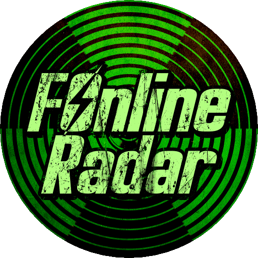

FOnline Radar is a primarily Discord-based info hub featuring server trackers, player counters, stats, links, media, and news from across the FOnline bubble, alongside chats with devs and community. Beyond FOnline, it brings you updates on the broader Fallout universe and its modding scene, as well as the post-apocalyptic and RPG genres, including indie projects.
What are you waiting for? Get in range!